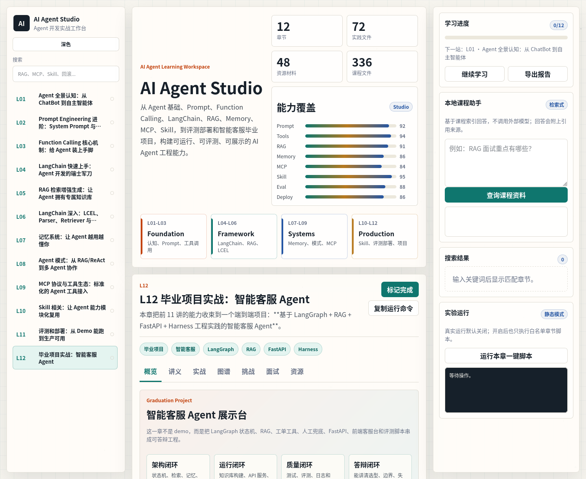

Agent Graph
用 LangGraph 把意图识别、检索、澄清、投诉工单、人工兜底和最终回答组织成状态机。
Graduation Showcase
L12 把前 11 章的 Prompt、工具调用、RAG、Memory、Agent 模式、Skill、评测部署收束到一个端到端项目。 它可以本地运行、自动测试、生成评测报告，也可以作为面试和答辩作品展示。

用 LangGraph 把意图识别、检索、澄清、投诉工单、人工兜底和最终回答组织成状态机。
知识库问答带引用来源，无法找到证据时显式兜底，避免把不确定内容讲成事实。
前端客服台和运营 Dashboard 展示会话、工单、知识缺口和评测结果。
通过测试、评测集、日志和 bad case 回流，让项目不是只能演示一次。
Runtime Story
项目展示时，可以按这条链路讲：用户提出问题，系统判断意图，检索知识库，必要时澄清，遇到投诉或无法解决时生成工单或转人工，最后用评测和日志证明质量。
Defense Notes